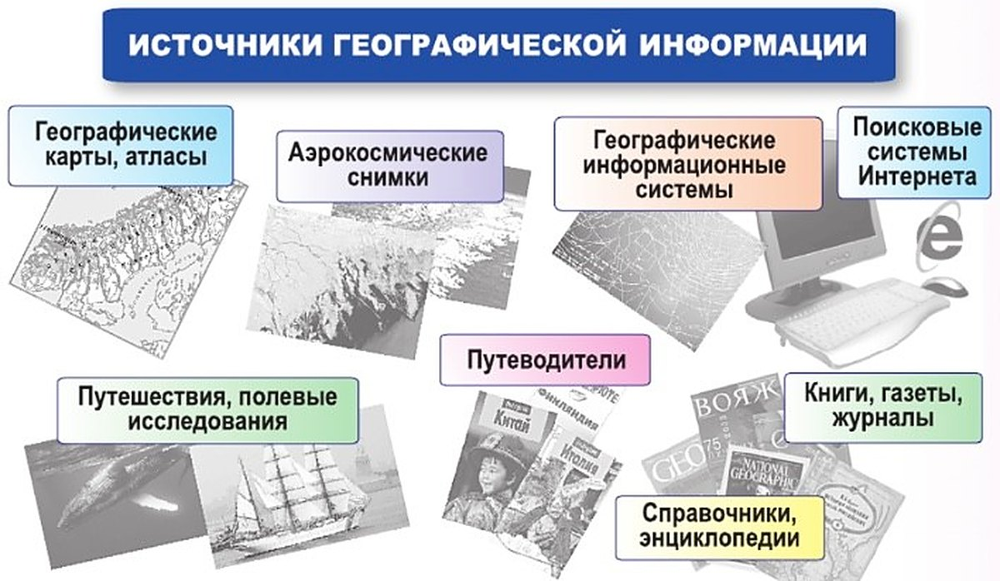

Как сегодня собирают информацию о Земле?
Как сегодня следят за всей Землёй сразу? С помощью искусственных спутников Земли. Это космические аппараты. Они всё время летают вокруг нашей планеты и наблюдают за ней без перерыва.
Русское слово «спутник» знают во всём мире. Его везде понимают без перевода.
12 апреля 1961 года человек впервые полетел в космос. Это был первый пилотируемый полёт. Первым в мире космонавтом стал русский — Юрий Гагарин. Он родом из Смоленской области.
Что делают спутники? Собирают огромное количество информации. Фотографируют Землю. Наблюдают за погодой. Обеспечивают связь между странами и континентами.
По космическим снимкам составляют географические карты и изучают территорию.
Пример: в бухте Визе в Карском море ледник прятал острова. Учёные изучили снимки со спутников — и открыли там новые острова.
А ещё спутники помогают найти дорогу. Их вокруг Земли очень много. Вместе они помогают довольно точно вычислить, где находится любой объект.
Так люди научились создавать навигационные системы. Они помогают пилотам, лоцманам и водителям автомобилей.
Непрерывное наблюдение за поверхностью Земли стало возможным с созданием искусственных спутников Земли — космических аппаратов, постоянно обращающихся вокруг нашей планеты. Русское слово спутник вошло во все языки мира и теперь везде понимается без перевода. А 12 апреля 1961 г. был совершён и первый пилотируемый полёт: первым в мире космонавтом был русский, уроженец Смоленской области Юрий Гагарин.
Спутники собирают огромное количество информации. Они фотографируют Землю, наблюдают за погодой, обеспечивают связь между странами и континентами. На основе космических снимков составляют географические карты, проводят разнообразные исследования территории. Например, открыть новые острова, ранее скрытые ледником, в бухте Визе в Карском море учёным помог анализ спутниковых снимков.
Множество спутников, постоянно летающих вокруг Земли, позволили решить очень важную задачу — достаточно точно вычислять местоположение любого объекта. Человек научился создавать навигационные системы, помогающие пилотам, лоцманам, водителям автомобилей.
12 апреля 1961 г. — первый пилотируемый полёт. Первый в мире космонавт — Юрий Гагарин, уроженец Смоленской области.
Информация, получаемая со спутников и пилотируемых космических кораблей, позволяет исследовать поверхность Земли.
космический аппарат: постоянно летает вокруг Земли, фотографирует её, наблюдает за погодой, даёт связь
полёт человека в космос. Первый — Юрий Гагарин, 12 апреля 1961 года
Пилот — тот, кто ведёт самолёт или космический корабль. Пилотируемый — значит, на корабле летит человек.
1. Русское слово «спутник» понимают во всём мире без перевода. Как ты думаешь, почему именно русское?
2. Почему острова в бухте Визе не замечали раньше — и что помогло их открыть?
3. Что общего у пилота, лоцмана и водителя? Чем им помогают спутники?
4. Аристотель догадался, что Земля — шар (§2). По каким наблюдениям? А как Землю изучают сегодня?
Откуда получают и где хранят географическую информацию?
Где искать сведения о Земле? На рисунке 19 показаны источники географической информации.
Географические карты. На них нанесено всё, что люди открыли на Земле за века. Собрание карт называется атлас. На уроках ты познакомишься с разными видами карт.
Энциклопедии и справочники. В них есть описания стран, районов и городов. Особый вид справочников — путеводители. Их любят туристы.
Интернет. Там огромное количество информации. Специальные программы показывают всю планету и прокладывают маршруты. Пример из учебника — сервис Гугл Карты (Google Maps).
Много поисковых систем помогает найти материалы о любой точке земного шара. Главное — правильно набрать нужное географическое название.
По каждой стране, району России, почти по каждому городу есть сайты — специальные страницы. Там собрано всё: официальные материалы, статистика, путевые дневники, впечатления, фотографии.
Что самое важное? Информации в Интернете очень много. Мало её найти — главное выбрать и оценить. Сравни, что пишут в нескольких источниках. Тогда легче отличить правду от ошибки или искажения.
Экспедиции, наблюдения, путешествия. Они и сегодня — важный источник информации.
ГИС. Когда появились мощные компьютеры, учёные создали географические информационные системы — сокращённо ГИС. В них огромное количество данных. А показывают они эти данные в виде электронных карт.
На рисунке 19 показаны источники географической информации. На географические карты нанесено всё то, что человечество открыло на Земле за века. Собрание карт называют атласом. Изучая географию, вы будете знакомиться с разными видами карт. Географические описания стран, районов и городов можно найти в энциклопедиях и справочниках. Особый вид справочников — путеводители, популярные среди туристов.
Огромное количество информации можно получить в сети Интернет. С помощью специальных программ (например, сервис Гугл Карты — Google Maps) можно увидеть всю планету, проложить маршруты. Множество поисковых систем помогает нам найти материалы о любой точке земного шара — стоит лишь правильно набрать нужное географическое название. По каждой стране мира, району России, почти по каждому городу в Интернете есть специальные страницы — сайты, где собирается информация по этой территории. Это и официальные материалы, и статистика, и путевые дневники, и просто впечатления, фотографии и многое другое. Информации в Интернете очень много. Важно не только уметь её найти, но и, главное, выбрать и оценить. Правильнее сравнить информацию из нескольких источников. Тогда легче отличить правдивые данные от ошибочных или искажённых.
Однако по-прежнему важным источником информации остаются экспедиции, наблюдения, путешествия.
Появление мощных компьютеров позволило учёным создать географические информационные системы (сокращённо ГИС). Они содержат огромное количество данных и отображают их в виде электронных карт.

Важно не только уметь найти информацию, но и, главное, выбрать и оценить. Правильнее сравнить информацию из нескольких источников.
Современные технологии позволяют быстро найти, обработать и сохранить любую географическую информацию.
помогает найти материалы: набираешь географическое название — получаешь список
специальная страница, где собрана информация о стране, районе или городе
Поисковая система — как библиотекарь. Сайт — как книга на полке, которую он тебе нашёл.
5. На одном сайте написано одно, на другом — другое. Что делать? Почему нельзя просто поверить первому сайту?
6. Зачем сегодня, когда есть спутники и Интернет, люди всё равно едут в экспедиции и путешествия?
7. Чем ГИС похожа на атлас и чем отличается?
8. Какой источник с рис. 19 помог открыть острова в бухте Визе? А какие пригодятся туристу, который едет в незнакомый город?
Итоги параграфа
- Как учёные собирают информацию о Земле?
- Перечислите источники географической информации. Какова их роль в изучении географии?
- Каково значение космических технологий для развития географической науки?
- Прочитав параграф, составьте его конспект. Для выполнения задания используйте подсказку (с. 8) о том, что должен содержать конспект.
- Найдите в тексте параграфа ответ на вопрос: как наблюдения и исследования в космосе помогают решать земные проблемы?
- Выпишите географические термины, которые встречаются в тексте параграфа. Какие из них вам уже знакомы? Какие вы встретили впервые?
- Найдите в Интернете информацию по вашему городу, району.
Обобщение по теме «Как люди открывали Землю»
Это итог всего раздела «Как люди открывали Землю» — параграфов 2—7.
Люди открывали новые земли всю свою историю. Сначала искали места для охоты, рыболовства, земледелия. Потом отправлялись в другие земли торговать и завоёвывать.
В XV—XVII веках наступила эпоха Великих географических открытий. Христофор Колумб открыл Америку для людей своего времени. Экспедиция Фернана Магеллана впервые обогнула земной шар.
Рубежи ойкумены — известных земель — сильно раздвинулись. Стали понятны очертания материков, на которых живут люди. Новые земли заселяли и осваивали. Развивались торговля, хозяйство, науки.
Имена многих мореплавателей, землепроходцев и учёных остались на географической карте. Среди них немало российских. Наши соотечественники освоили Сибирь, открыли Антарктиду, первыми запустили искусственный спутник и полетели в космос.
А новейшие компьютеры позволили создать географические информационные системы.
Географические открытия совершались на Земле на протяжении всей истории человечества. Сначала человек искал новые территории для охоты, рыболовства, земледелия. В дальнейшем отправлялся в другие земли для торговли, завоеваний. В XV—XVII вв. наступила эпоха Великих географических открытий. Христофор Колумб открыл для своих современников Америку, экспедиция Фернана Магеллана впервые обогнула земной шар. Рубежи ойкумены (известных земель) значительно раздвинулись. Были определены основные контуры обитаемых материков. Происходило заселение и освоение новых земель. Развивались торговля, хозяйство, науки.
Многие имена мореплавателей, землепроходцев, учёных остались на географической карте. Среди них немало российских имён. Наши соотечественники освоили Сибирь, открыли Антарктиду и первыми запустили искусственный спутник и полетели в космос.
Появление новейших компьютеров позволило создать географические информационные системы.
- Выберите любую газету. Выпишите все встретившиеся вам географические термины и названия. Систематизируйте их в группы: а) здесь я побывал; б) об этом часто слышал; в) слышу это впервые; г) очень хочу побывать; д) здесь живут мои родные, друзья; е) другое. На основе проделанной работы сформулируйте ответ на вопрос: как в повседневной жизни человек сталкивается с географическими знаниями?
- У знаменитого французского путешественника Мишеля Песселя спросили, зачем он отправляется в тяжёлые и опасные путешествия, ведь на Земле уже всё открыто. Он ответил: «Во-первых, ещё не всё. Во-вторых, вы открываете новые земли для себя. И наконец, путешествие — это открытие себя». А как вы считаете?
Не забудьте отметить свои достижения! На с. 8 учебник советует: в тетради составьте таблицу из трёх столбцов — «Я знаю», «Я могу», «Мне интересно» — и заполняйте её после изучения каждой темы.
9. Зачем люди отправлялись открывать новые земли? Как менялись причины со временем?
10. В «Обобщении» названы три дела наших соотечественников. Что это за дела и где о них рассказано?
11. Что значит «рубежи ойкумены значительно раздвинулись»? Благодаря чему это случилось?
Проверь себя
Нажимай по очереди — от самого древнего к самому близкому к нам. Можно подглядеть шкалу в разделе «Обобщение по теме».
Нажми на правильный ответ. Ошиблась — ничего страшного, пробуй ещё.
Собрание карт в одной книге
Собрание карт называют атласом.
Книжка для туристов «Москва»: что посмотреть и как добраться
Путеводитель — особый вид справочников, популярный среди туристов.
Описания стран, районов и городов — по алфавиту, в толстом томе
Географические описания стран, районов и городов можно найти в энциклопедиях и справочниках.
Газета, в которой ты ищешь географические названия к заданию 1
Это газета. На рис. 19 газеты, книги и журналы — отдельный источник.
Журнал о путешествиях с фотографиями
Журналы — источник с рис. 19. Там на картинке как раз журналы о путешествиях.
Карта на стене в кабинете географии
На географические карты нанесено всё, что человечество открыло на Земле.
Фотография Земли, которую сделал спутник
Спутники фотографируют Землю — это космические снимки.
По ним нашли острова в бухте Визе
Учёным помог анализ спутниковых снимков.
Мощный компьютер хранит огромное количество данных и показывает их электронными картами
Это географические информационные системы.
Набрать в поисковой системе «Москва» и найти сайты о городе
Поисковые системы помогают найти материалы о любой точке земного шара.
Яндекс Карты на телефоне: найти улицу и проложить маршрут
Это специальная программа в Интернете — как сервис Гугл Карты из учебника: с ней можно увидеть всю планету и проложить маршрут.
Мама-геолог едет на карьер искать минералы
Работа на месте, на природе — это полевое исследование.
Экспедиция: учёные едут изучать северные моря
Экспедиции, наблюдения, путешествия по-прежнему остаются важным источником информации.
1. Что такое искусственный спутник Земли?
2. Кто и когда совершил первый пилотируемый полёт?
3. Что помогло открыть новые острова в бухте Визе в Карском море?
4. Кому, по учебнику, помогают навигационные системы?
5. Как легче отличить правдивые данные от ошибочных?
6. ГИС — это…
Расскажи вслух
Как сегодня собирают информацию о Земле
- Искусственные спутники Земли постоянно летают вокруг планеты: непрерывное наблюдение за поверхностью.
- Спутники фотографируют Землю, наблюдают за погодой, обеспечивают связь; по снимкам составляют карты (острова в бухте Визе).
- Спутники помогают вычислять местоположение — так появились навигационные системы для пилотов, лоцманов, водителей.
Первый полёт человека в космос
- 12 апреля 1961 г. — первый пилотируемый полёт.
- Первый в мире космонавт — русский, уроженец Смоленской области Юрий Гагарин.
- Русское слово «спутник» вошло во все языки мира.
Источники географической информации
- Карты и атласы; энциклопедии, справочники, путеводители; книги, газеты, журналы.
- Аэрокосмические снимки, Интернет (поисковые системы, сайты, специальные программы), ГИС.
- Экспедиции, наблюдения, путешествия по-прежнему важный источник.
Как не ошибиться с информацией из Интернета
- Информации очень много: важно не только найти, но и выбрать и оценить.
- На сайтах есть и официальные материалы, и просто впечатления.
- Правильнее сравнить несколько источников — так легче отличить правдивые данные от ошибочных.
Как люди открывали Землю (обобщение)
- Сначала искали земли для охоты, рыболовства, земледелия, потом — для торговли и завоеваний.
- XV—XVII вв. — эпоха Великих географических открытий: Колумб, Магеллан; рубежи ойкумены раздвинулись.
- Наши соотечественники освоили Сибирь, открыли Антарктиду, первыми запустили спутник и полетели в космос.